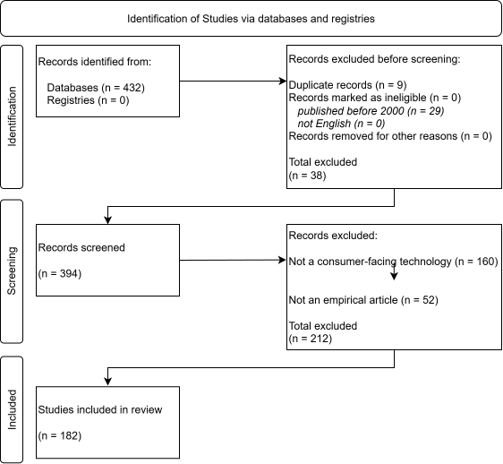

| Authors | Year | Title | Journal | Inclusion / Exclusion |
|---|---|---|---|---|
| Gordon B.R. | 2,009 | A dynamic model of consumer replacement cycles in the PC processor industry | Marketing Science | Yes |
| Sonnier G.P.; Mcalister L.; Rutz O.J. | 2,011 | A dynamic model of the effect of online communications on firm sales | Marketing Science | Yes |
| Bradlow E.T.; Rao V.R. | 2,000 | A hierarchical Bayes model for assortment choice | Journal of Marketing Research | No: Not consumer-facing |
| Dunn L.; White K.; Dahl D.W. | 2,020 | A little piece of me: When mortality reminders lead to giving to others | Journal of Consumer Research | No: Not consumer-facing |
| Yu J. | 2,021 | A model of brand architecture choice: a house of brands vs. A branded house | Marketing Science | No: Not consumer-facing |
| Kukar-Kinney M.; Scheinbaum A.C.; Orimoloye L.O.; Carlson J.R.; He H. | 2,022 | A model of online shopping cart abandonment: evidence from e-tail clickstream data | Journal of the Academy of Marketing Science | Yes |
| Messinger P.R.; Narasimhan C. | 1,997 | A model of retail formats based on consumers' economizing on shopping time | Marketing Science | No: Too old |
| Cian L.; Krishna A.; Elder R.S. | 2,015 | A sign of things to come: Behavioral change through dynamic iconography | Journal of Consumer Research | No: Not consumer-facing |
| Kim N.; Bridges E.; Srivastava R.K. | 1,999 | A simultaneous model for innovative product categorysales diffusion and competitive dynamics | International Journal of Research in Marketing | No: Too old |
| Herzenstein M.; Posavac S.S.; Joško Brakus J. | 2,007 | Adoption of new and really new products: The effects of self-regulation systems and risk salience | Journal of Marketing Research | Yes |
| Zimmermann L.; Somasundaram J.; Saha B. | 2,024 | Adoption of New Technology Vaccines | Journal of Marketing | Yes |
| Shugan S.M.; Xie J. | 2,005 | Advance-selling as a competitive marketing tool | International Journal of Research in Marketing | No: Not empirical |
| Ghosh B.; Stock A. | 2,010 | Advertising effectiveness, digital video recorders, and product market competition | Marketing Science | No: Not empirical |
| Kim T.W.; Lee H.; Kim M.Y.; Kim S.A.; Duhachek A. | 2,023 | AI increases unethical consumer behavior due to reduced anticipatory guilt | Journal of the Academy of Marketing Science | Yes |
| Dorotic M.; Stagno E.; Warlop L. | 2,024 | AI on the street: Context-dependent responses to artificial intelligence | International Journal of Research in Marketing | Yes |
| Kim H.-Y.; McGill A.L. | 2,025 | AI-induced dehumanization | Journal of Consumer Psychology | Yes |
| Spann M.; Bertini M.; Koenigsberg O.; Zeithammer R.; Aparicio D.; Chen Y.; Fantini F.; Jin G.Z.; Morwitz V.G.; Popkowski Leszczyc P.; Vitorino M.A.; Williams G.Y.; Yoo H. | 2,026 | Algorithmic pricing: Implications for marketing strategy and regulation | International Journal of Research in Marketing | No: Not empirical |
| Longoni C.; Cian L.; Kyung E.J. | 2,023 | Algorithmic Transference: People Overgeneralize Failures of AI in the Government | Journal of Marketing Research | Yes |
| Puntoni S. | 2,024 | Already here: Metaverse in touch and sound | Journal of Consumer Psychology | No: Not empirical |
| Fornell C.; Morgeson F.V.; Hult G.T.M. | 2,016 | An abnormally abnormal intangible: Stock returns on customer satisfaction | Journal of Marketing | No: Not consumer-facing |
| Dabholkar P.A.; Bagozzi R.P. | 2,002 | An attitudinal model of technology-based self-service: Moderating effects of consumer traits and situational factors | Journal of the Academy of Marketing Science | Yes |
| Liu X.; Derdenger T.; Sun B. | 2,018 | An empirical analysis of consumer purchase behavior of base products and add-ons given compatibility constraints | Marketing Science | Yes |
| Kellaris J.J.; Kent R.J. | 1,993 | An exploratory investigation of responses elicited by music varying in tempo, tonality, and texture | Journal of Consumer Psychology | No: Too old |
| Kahn B.E.; Baron J. | 1,995 | An Exploratory Study of Choice Rules Favored for High-Stakes Decisions | Journal of Consumer Psychology | No: Too old |
| Sood A.; Kumar V. | 2,017 | Analyzing client profitability across diffusion segments for a continuous innovation | Journal of Marketing Research | No: Not consumer-facing |
| Kang S.Y.; Kim J.; Lakshmanan A. | 2,025 | Anatomical Depiction: How Showing a Product's Inner Structure Shapes Product Valuations | Journal of Marketing | No: Not consumer-facing |
| Goldfarb A.; Yang B. | 2,009 | Are all managers created equal? | Journal of Marketing Research | Yes |
| Jenkins M.R.; Fombelle P.W.; Steffel M. | 2,026 | Are Apologies Always the Best Policy? Apologies for Service Failures Backfire When Consumers Are Not Aware of the Failure | Journal of Consumer Research | No: Not consumer-facing |
| Mu J.; Zhang J.Z. | 2,025 | Artificial intelligence marketing usage and firm performance | Journal of the Academy of Marketing Science | Yes |
| Saboo A.R.; Kumar V.; Anand A. | 2,017 | Assessing the impact of customer concentration on initial public offering and balance sheet-based outcomes | Journal of Marketing | No: Not consumer-facing |
| Li H.; Kannan P.K. | 2,014 | Attributing conversions in a multichannel online marketing environment: An empirical model and a field experiment | Journal of Marketing Research | Yes |
| Wang X.; Lu S.; Li X.; Khamitov M.; Bendle N. | 2,021 | Audio Mining: The Role of Vocal Tone in Persuasion | Journal of Consumer Research | Yes |
| Tan Y.-C.; Chandukala S.R.; Reddy S.K. | 2,022 | Augmented Reality in Retail and Its Impact on Sales | Journal of Marketing | Yes |
| Hilken T.; de Ruyter K.; Chylinski M.; Mahr D.; Keeling D.I. | 2,017 | Augmenting the eye of the beholder: exploring the strategic potential of augmented reality to enhance online service experiences | Journal of the Academy of Marketing Science | Yes |
| Liu X.(.; Hoang C.; Ng S. | 2,026 | Automated Versus Human-Operated: Impact of AI-Driven Autonomous Stores on Prosocial Behavior | Journal of Marketing | Yes |
| Novak T.P.; Hoffman D.L. | 2,023 | Automation Assemblages in the Internet of Things: Discovering Qualitative Practices at the Boundaries of Quantitative Change | Journal of Consumer Research | Yes |
| Gerhart J.-V.; Senyuz A.; Kamleitner B. | 2,025 | Awe helps NFTs. The added value of object-inspired awe for blockchain-based digital art | International Journal of Research in Marketing | Yes |
| deLeon A.J.; Chatterjee S.C. | 2,017 | B2B relationship calculus: quantifying resource effects in service-dominant logic | Journal of the Academy of Marketing Science | No: Not consumer-facing |
| Garvey A.M.; Kim T.; Duhachek A. | 2,023 | Bad News? Send an AI. Good News? Send a Human | Journal of Marketing | Yes |
| Pazgal A.; Soberman D. | 2,008 | Behavior-based discrimination: Is it a winning play, and if so, when? | Marketing Science | No: Not consumer-facing |
| Kashmiri S.; Nicol C.D.; Hsu L. | 2,017 | Birds of a feather: intra-industry spillover of the Target customer data breach and the shielding role of IT, marketing, and CSR | Journal of the Academy of Marketing Science | No: Not consumer-facing |
| Malik N.; Wei Y.; Appel G.; Luo L. | 2,023 | Blockchain technology for creative industries: Current state and research opportunities | International Journal of Research in Marketing | No: Not empirical |
| Hewett K.; Rand W.; Rust R.T.; Van Heerde H.J. | 2,016 | Brand buzz in the echoverse | Journal of Marketing | Yes |
| Swaminathan V.; Sorescu A.; Steenkamp J.-B.E.M.; O’Guinn T.C.G.; Schmitt B. | 2,020 | Branding in a Hyperconnected World: Refocusing Theories and Rethinking Boundaries | Journal of Marketing | No: Not consumer-facing |
| Kaul R.; Anderson S.J.; Chintagunta P.K.; Vilcassim N. | 2,025 | Call Me Maybe: Does Customer Feedback Seeking Impact Nonsolicited Customers? | Marketing Science | No: Not consumer-facing |
| Wang L.C.; Baker J.; Wagner J.A.; Wakefield K. | 2,007 | Can a retail Web Site be social? | Journal of Marketing | Yes |
| Ganesh J.; Kumar V. | 1,996 | Capturing the cross-national learning effect: An analysis of an industrial technology diffusion | Journal of the Academy of Marketing Science | No: Too old |
| De Freitas J.; Uğuralp A.K.; Oğuz-Uğuralp Z.; Puntoni S. | 2,024 | Chatbots and mental health: Insights into the safety of generative AI | Journal of Consumer Psychology | Yes |
| Meuter M.L.; Bitner M.J.; Ostrom A.L.; Brown S.W. | 2,005 | Choosing among alternative service delivery modes: An investigation of customer trial of self-service technologies | Journal of Marketing | Yes |
| Jagadish H.V. | 2,020 | Circles of Privacy | Journal of Consumer Psychology | No: Not consumer-facing |
| Roth Y.; Wänke M.; Erev I. | 2,016 | Click or skip: The role of experience in easy-click checking decisions | Journal of Consumer Research | Yes |
| Day G.S. | 2,011 | Closing the marketing capabilities gap | Journal of Marketing | No: Not consumer-facing |
| Agarwal A.; Lee B.; Misra S. | 2,026 | CMOs’ influence on data breach prevention | Journal of the Academy of Marketing Science | No: Not consumer-facing |
| Shanks I.; Scott M.L.; Mende M.; van Doorn J.; Grewal D. | 2,025 | Cobotic service teams and power dynamics: Understanding and mitigating unintended consequences of human-robot collaboration in healthcare services | Journal of the Academy of Marketing Science | Yes |
| Simon F.; Usunier J.-C. | 2,007 | Cognitive, demographic, and situational determinants of service customer preference for personnel-in-contact over self-service technology | International Journal of Research in Marketing | Yes |
| Bucklin L.P. | 1,986 | Competition among European food distribution systems in concentrated markets | International Journal of Research in Marketing | No: Too old |
| Wolf T.; Jahn S.; Hammerschmidt M.; Weiger W.H. | 2,021 | Competition versus cooperation: How technology-facilitated social interdependence initiates the self-improvement chain | International Journal of Research in Marketing | Yes |
| Herhausen D.; Grewal L.; Cummings K.H.; Roggeveen A.L.; Villarroel Ordenes F.; Grewal D. | 2,023 | Complaint De-Escalation Strategies on Social Media | Journal of Marketing | Yes |
| Carlson K.; Kopalle P.K.; Riddell A.; Rockmore D.; Vana P. | 2,023 | Complementing human effort in online reviews: A deep learning approach to automatic content generation and review synthesis | International Journal of Research in Marketing | Yes |
| Acquisti A.; Varian H.R. | 2,005 | Conditioning prices on purchase history | Marketing Science | No: Not consumer-facing |
| Durand R.M.; Sharma S. | 1,982 | Conservation or energy development: Consumer perceptions of alternate solutions to the energy crisis | Journal of the Academy of Marketing Science | No: Too old |
| Bettman J.R.; Luce M.F.; Payne J.W. | 1,998 | Constructive consumer choice processes | Journal of Consumer Research | No: Too old |
| Chen Y.; Iyer G. | 2,002 | Consumer addressability and customized pricing | Marketing Science | No: Not consumer-facing |
| Hoffman D.L.; Novak T.P. | 2,018 | Consumer and object experience in the internet of things: An assemblage theory approach | Journal of Consumer Research | No: Not empirical |
| Lemmens A.; Croux C.; Dekimpe M.G. | 2,007 | Consumer confidence in Europe: United in diversity? | International Journal of Research in Marketing | No: Not consumer-facing |
| Husemann K.C.; Eckhardt G.M. | 2,019 | Consumer Deceleration | Journal of Consumer Research | No: Not consumer-facing |
| Zhang J.Z.; Chang C.-W. | 2,021 | Consumer dynamics: theories, methods, and emerging directions | Journal of the Academy of Marketing Science | No: Not consumer-facing |
| Dabholkar P.A. | 1,996 | Consumer evaluations of new technology-based self-service options: An investigation of alternative models of service quality | International Journal of Research in Marketing | No: Too old |
| Zheng Y.; Alba J.W.; Hutchinson J.B.; Hutchinson J.W. | 2,026 | Consumer expertise across technological frontiers: Consumer literacy, the internet, and artificial intelligence | Journal of the Academy of Marketing Science | No: Not empirical |
| Blanchard S.J.; Martin K.D.; Salisbury L.C. | 2,026 | Consumer financial data exchange: marketing meets digital finance and open banking | International Journal of Research in Marketing | No: Not empirical |
| Schmitt B. | 2,024 | Consumer Information Processing and Decision-Making: Origins, Findings, Applications, and Future Directions | Journal of Consumer Research | No: Not consumer-facing |
| Huang D.; Luo L. | 2,016 | Consumer preference elicitation of complex products using fuzzy support vector machine active learning | Marketing Science | Yes |
| Liu Y.; Yildirim P.; Zhang Z.J. | 2,024 | Consumer preferences and firm technology choice | International Journal of Research in Marketing | Yes |
| Johnson G.A.; Shriver S.K.; Du S. | 2,020 | Consumer privacy choice in online advertising: Who opts out and at what cost to industry? | Marketing Science | Yes |
| Blaseg D.; Schulze C.; Skiera B. | 2,020 | Consumer protection on Kickstarter | Marketing Science | Yes |
| Wu Y.; Nambisan S.; Xiao J.; Xie K. | 2,022 | Consumer resource integration and service innovation in social commerce: the role of social media influencers | Journal of the Academy of Marketing Science | Yes |
| Sohn S.; Schnittka O.; Seegebarth B. | 2,024 | Consumer responses to firm-owned devices in self-service technologies: Insights from a data privacy perspective | International Journal of Research in Marketing | Yes |
| Strebel J.; Erdem T.; Swait J. | 2,004 | Consumer Search in High Technology Markets: Exploring the Use of Traditional Information Channels | Journal of Consumer Psychology | Yes |
| Beverland M.B.; Fernandez K.V.; Eckhardt G.M. | 2,024 | Consumer Work and Agency in the Analog Revival | Journal of Consumer Research | Yes |
| Puntoni S.; Reczek R.W.; Giesler M.; Botti S. | 2,021 | Consumers and Artificial Intelligence: An Experiential Perspective | Journal of Marketing | No: Not empirical |
| Zimmermann J.; Martin K.D.; Schumann J.H.; Widjaja T. | 2,024 | Consumers’ multistage data control in technology-mediated environments | International Journal of Research in Marketing | Yes |
| Hollebeek L.D.; Belk R. | 2,021 | Consumers’ technology-facilitated brand engagement and wellbeing: Positivist TAM/PERMA- vs. Consumer Culture Theory perspectives | International Journal of Research in Marketing | No: Not empirical |
| Zhang K.; Katona Z. | 2,012 | Contextual advertising | Marketing Science | No: Not empirical |
| NA | 2,024 | Corrigendum to: The Caring Machine: Feeling AI for Customer Care (Journal of Marketing, (2024), 88, 5, (1-23), 10.1177/00222429231224748) | Journal of Marketing | Yes |
| Wirtz J.; Zeithaml V. | 2,018 | Cost-effective service excellence | Journal of the Academy of Marketing Science | No: Not consumer-facing |
| Coviello N.E.; Joseph R.M. | 2,012 | Creating major innovations with customers: Insights from small and young technology firms | Journal of Marketing | No: Not consumer-facing |
| Bernthal M.J.; Crockett D.; Rose R.L. | 2,005 | Credit cards as lifestyle facilitators | Journal of Consumer Research | Yes |
| Van Ittersum K.; Feinberg F.M. | 2,010 | Cumulative timed intent: A new predictive tool for technology adoption | Journal of Marketing Research | No: Not consumer-facing |
| Tirenni G.; Labbi A.; Berrospi C.; Elisseeff A.; Bhose T.; Pauro K.; Pöyhönen S. | 2,007 | Customer Equity and Lifetime Management (CELM) finnair case study | Marketing Science | No: Not consumer-facing |
| Van Birgelen M.; De Ruyter K.; De Jong A.; Wetzels M. | 2,002 | Customer evaluations of after-sales service contact modes: An empirical analysis of national culture's consequences | International Journal of Research in Marketing | Yes |
| Ernst H.; Hoyer W.D.; Krafft M.; Krieger K. | 2,011 | Customer relationship management and company performance-the mediating role of new product performance | Journal of the Academy of Marketing Science | Yes |
| Anderson E.W.; Fornell C.; Rust R.T. | 1,997 | Customer satisfaction, productivity, and profitability: Differences between goods and services | Marketing Science | No: Too old |
| Ghosh M.; Dutta S.; Stremersch S. | 2,006 | Customizing complex products: When should the vendor take control? | Journal of Marketing Research | No: Not consumer-facing |
| Zhang J.; Krishnamurthi L. | 2,004 | Customizing promotions in online stores | Marketing Science | Yes |
| Kalyanaram G.; Krishnan V. | 1,997 | Deliberate Product Definition: Customizing the Product Definition Process | Journal of Marketing Research | Duplicate |
| Kalyanaram G.; Krishnan V. | 1,997 | Deliberate product definition: Customizing the product definition process | Journal of Marketing Research | No: Too old |
| Hermann E.; Williams G.Y.; Puntoni S. | 2,024 | Deploying artificial intelligence in services to AID vulnerable consumers | Journal of the Academy of Marketing Science | No: Not empirical |
| Joo M.; Kim S.H.; Ghose A.; Wilbur K.C. | 2,023 | Designing Distributed Ledger technologies, like Blockchain, for advertising markets | International Journal of Research in Marketing | No: Not empirical |
| Roberts J.H. | 2,000 | Developing new rules for new markets | Journal of the Academy of Marketing Science | No: Not consumer-facing |
| Lim S.; Donkers B.; van Dijl P.; Dellaert B.G.C. | 2,021 | Digital customization of consumer investments in multiple funds: virtual integration improves risk–return decisions | Journal of the Academy of Marketing Science | Yes |
| Varadarajan R.; Welden R.B.; Arunachalam S.; Haenlein M.; Gupta S. | 2,022 | Digital product innovations for the greater good and digital marketing innovations in communications and channels: Evolution, emerging issues, and future research directions | International Journal of Research in Marketing | No: Not empirical |
| Quach S.; Thaichon P.; Martin K.D.; Weaven S.; Palmatier R.W. | 2,022 | Digital technologies: tensions in privacy and data | Journal of the Academy of Marketing Science | No: Not consumer-facing |
| Yang J.; Anderson E.T.; Gordon B.R. | 2,021 | Digitization and flexibility: Evidence from the south korean movie market | Marketing Science | Yes |
| Johnson D.S.; Bharadwaj S. | 2,005 | Digitization of selling activity and sales force performance: An empirical investigation | Journal of the Academy of Marketing Science | Yes |
| Johnson E.J. | 2,001 | Digitizing consumer research | Journal of Consumer Research | No: Not consumer-facing |
| Campbell C.; Sands S.; McFerran B.; Mavrommatis A. | 2,025 | Diversity representation in advertising | Journal of the Academy of Marketing Science | No: Not consumer-facing |
| Woolley K.; Sharif M.A. | 2,022 | Down a Rabbit Hole: How Prior Media Consumption Shapes Subsequent Media Consumption | Journal of Marketing Research | Yes |
| Kumar V.; Nim N.; Sharma A. | 2,019 | Driving growth of Mwallets in emerging markets: a retailer’s perspective | Journal of the Academy of Marketing Science | Yes |
| Mohr J.J.; Sarin S. | 2,009 | Drucker's insights on market orientation and innovation: Implications for emerging areas in high-technology marketing | Journal of the Academy of Marketing Science | No: Not consumer-facing |
| Risselada H.; Verhoef P.C.; Bijmolt T.H.A. | 2,014 | Dynamic effects of social influence and direct marketing on the adoption of high-technology products | Journal of Marketing | Yes |
| Rosa J.A.; Malter A.J. | 2,003 | E-(embodied) knowledge and e-commerce: How physiological factors affect online sales of experiential products | Journal of Consumer Psychology | No: Not empirical |
| Habel J.; Alavi S.; Heinitz N. | 2,024 | Effective Implementation of Predictive Sales Analytics | Journal of Marketing Research | No: Not consumer-facing |
| Sriram S.; Chintagunta P.K.; Neelamegham R. | 2,006 | Effects of brand preference, product attributes, and marketing mix variables in technology product markets | Marketing Science | Yes |
| Xia L.; Sudharshan D. | 2,002 | Effects of interruptions on consumer online decision processes | Journal of Consumer Psychology | Yes |
| Xie J.; Shugan S.M. | 2,001 | Electronic tickets, smart cards, and online prepayments: When and how to advance sell | Marketing Science | No: Not empirical |
| Gelbrich K.; Hagel J.; Orsingher C. | 2,021 | Emotional support from a digital assistant in technology-mediated services: Effects on customer satisfaction and behavioral persistence | International Journal of Research in Marketing | Yes |
| Eberhardt W.; Brüggen E.; Post T.; Hoet C. | 2,021 | Engagement behavior and financial well-being: The effect of message framing in online pension communication | International Journal of Research in Marketing | Yes |
| Haumann T.; Güntürkün P.; Schons L.M.; Wieseke J. | 2,015 | Engaging customers in coproduction processes: How value-enhancing and intensity-reducing communication strategies mitigate the negative effects of coproduction intensity | Journal of Marketing | Yes |
| Kumar V.; Leone R.P.; McAlister L. | 2,025 | Enhancing customer engagement: Exploration and introduction to the special section | Journal of the Academy of Marketing Science | No: Not empirical |
| Moreau C.P.; Lehmann D.R.; Markman A.B. | 2,001 | Entrenched knowledge structures and consumer response to new products | Journal of Marketing Research | No: Not consumer-facing |
| Han J.K.; Kim N.; Kim H.-B. | 2,001 | Entry barriers: A dull-, one-, or two-edged sword for incumbents? Unraveling the paradox from a contingency perspective | Journal of Marketing | No: Not consumer-facing |
| Seiler S.; Pinna F. | 2,017 | Estimating search benefits from path-tracking data: Measurement and determinants | Marketing Science | No: Not consumer-facing |
| Wernerfelt N.; Tuchman A.; Shapiro B.T.; Moakler R. | 2,025 | Estimating the Value of Offsite Tracking Data to Advertisers: Evidence from Meta | Marketing Science | No: Not consumer-facing |
| Lam S.Y.; Vandenbosch M.; Hulland J.; Pearce M. | 2,001 | Evaluating promotions in shopping environments: Decomposing sales response into attraction, conversion, and spending effects | Marketing Science | No: Not consumer-facing |
| Jayasinghe L.; Ritson M. | 2,013 | Everyday advertising context: An ethnography of advertising response in the family living room | Journal of Consumer Research | Yes |
| Morewedge C.K.; Monga A.; Palmatier R.W.; Shu S.B.; Small D.A. | 2,021 | Evolution of Consumption: A Psychological Ownership Framework | Journal of Marketing | No: Not empirical |
| Kopalle P.K.; Gangwar M.; Kaplan A.; Ramachandran D.; Reinartz W.; Rindfleisch A. | 2,022 | Examining artificial intelligence (AI) technologies in marketing via a global lens: Current trends and future research opportunities | International Journal of Research in Marketing | No: Not empirical |
| Smith L.W.; Rose R.L.; Zablah A.R.; McCullough H.; Saljoughian M. | 2,023 | Examining post-purchase consumer responses to product automation | Journal of the Academy of Marketing Science | Yes |
| Collier J.E.; Sherrell D.L. | 2,010 | Examining the influence of control and convenience in a self-service setting | Journal of the Academy of Marketing Science | Yes |
| Seifert R.; Otten C.; Clement M.; Albers S.; Kleinen O. | 2,023 | Exclusivity strategies for digital products across digital and physical markets | Journal of the Academy of Marketing Science | Yes |
| Tian K.; Belk R.W. | 2,005 | Extended self and possessions in the workplace | Journal of Consumer Research | No: Not consumer-facing |
| Belk R.W. | 2,013 | Extended self in a digital world | Journal of Consumer Research | No: Not empirical |
| Thompson D.V.; Hamilton R.W.; Rust R.T. | 2,005 | Feature fatigue: When product capabilities become too much of a good thing | Journal of Marketing Research | No: Not consumer-facing |
| Srinivasan R.; Lilien G.L.; Rangaswamy A. | 2,004 | First in, First out? The Effects of Network Externalities on Pioneer Survival | Journal of Marketing | No: Not consumer-facing |
| Abell A.; Biswas D.; Arroyo Mera C. | 2,024 | Food and technology: Using digital devices for restaurant orders leads to indulgent outcomes | Journal of the Academy of Marketing Science | Yes |
| Fronczek L.P.; Mende M.; Scott M.L.; Nenkov G.Y.; Gustafsson A. | 2,023 | Friend or foe? Can anthropomorphizing self-tracking devices backfire on marketers and consumers? | Journal of the Academy of Marketing Science | Yes |
| Wood S.L.; Moreau C.P. | 2,006 | From fear to loathing? How emotion influences the evaluation and early use of innovations | Journal of Marketing | No: Not consumer-facing |
| Ordanini A.; Nunes J.C. | 2,016 | From fewer blockbusters by more superstars to more blockbusters by fewer superstars: How technological innovation has impacted convergence on the music chart | International Journal of Research in Marketing | Yes |
| Cayla J.; Bhatnagar K.; Nanarpuzha R.; Dey S. | 2,025 | From social feeds to market fields: How influencer stories drive market innovation | International Journal of Research in Marketing | Yes |
| Fritz W.; Hadi R.; Stephen A. | 2,023 | From tablet to table: How augmented reality influences food desirability | Journal of the Academy of Marketing Science | Yes |
| Luo X.; Tong S.; Fang Z.; Qu Z. | 2,019 | Frontiers: Machines vs. humans: The impact of artificial intelligence chatbot disclosure on customer purchases | Marketing Science | Yes |
| Liu J.; Hill S. | 2,021 | Frontiers: Moment marketing: Measuring dynamics in cross-channel ad effectiveness | Marketing Science | No: Not consumer-facing |
| Todri V. | 2,022 | Frontiers: The Impact of Ad-Blockers on Online Consumer Behavior | Marketing Science | Yes |
| Dubé J.-P.; Lynch J.G.; Bergemann D.; Demirer M.; Goldfarb A.; Johnson G.; Lambrecht A.; Lin T.; Tuchman A.; Tucker C. | 2,025 | Frontiers: The Intended and Unintended Consequences of Privacy Regulation for Consumer Marketing | Marketing Science | No: Not empirical |
| Melumad S.; Meyer R. | 2,020 | Full Disclosure: How Smartphones Enhance Consumer Self-Disclosure | Journal of Marketing | Yes |
| Schmitt B. | 2,025 | GenAI and Consumer Research: Are We the Last Generation of Human Consumer Researchers? | Journal of Consumer Research | No: Not consumer-facing |
| Tonietto G.N.; Barasch A. | 2,021 | Generating Content Increases Enjoyment by Immersing Consumers and Accelerating Perceived Time | Journal of Marketing | Yes |
| Cillo P.; Rubera G. | 2,025 | Generative AI in innovation and marketing processes: A roadmap of research opportunities | Journal of the Academy of Marketing Science | No: Not empirical |
| Daviet R.; Nave G.; Wind J. | 2,022 | Genetic Data: Potential Uses and Misuses in Marketing | Journal of Marketing | No: Not empirical |
| Fong N.M.; Fang Z.; Luo X. | 2,015 | Geo-conquesting: Competitive locational targeting of mobile promotions | Journal of Marketing Research | No: Not consumer-facing |
| Uhlendorf-Leo K.; Uhrich S.; Völckner F. | 2,026 | Getting hands on(line)? A meta-analysis of the effectiveness of extended realities in online retailing | International Journal of Research in Marketing | Yes |
| Gupta S.; Pansari A.; Kumar V. | 2,018 | Global Customer Engagement | Journal of Marketing | No: Not consumer-facing |
| Appau S.; Eckhardt G.M.; Baako K.T. | 2,026 | Global Ride-Hailing Platform Affordances and Developing Market Characteristics | Journal of Marketing | Yes |
| Etkin J.; Memmi S.A. | 2,021 | Goal Conflict Encourages Work and Discourages Leisure | Journal of Consumer Research | No: Not consumer-facing |
| Hadi R.; Valenzuela A. | 2,021 | Good vibrations: Consumer responses to technology-mediated haptic feedback | Journal of Consumer Research | Yes |
| Landwehr J.R.; Labroo A.A.; Herrmann A. | 2,011 | Gut liking for the ordinary: Incorporating design fluency improves automobile sales forecasts | Marketing Science | No: Not consumer-facing |
| Kalwey T.; Krafft M.; Lim Y.; Mantrala M.K. | 2,025 | Holistic Selling: An Emerging Paradigm in B2B Markets | Journal of Marketing | No: Not consumer-facing |
| Kim J.H.; Kim M.; Kwak D.W.; Lee S. | 2,022 | Home-Tutoring Services Assisted with Technology: Investigating the Role of Artificial Intelligence Using a Randomized Field Experiment | Journal of Marketing Research | Yes |
| Eisingerich A.B.; Marchand A.; Fritze M.P.; Dong L. | 2,019 | Hook vs. hope: How to enhance customer engagement through gamification | International Journal of Research in Marketing | Yes |
| Kaliyamurthy A.K.; Schau H.J. | 2,025 | How Algorithms Constrain Consumer Experience | Journal of Consumer Research | Yes |
| De Luca L.M.; Herhausen D.; Troilo G.; Rossi A. | 2,021 | How and when do big data investments pay off? The role of marketing affordances and service innovation | Journal of the Academy of Marketing Science | No: Not consumer-facing |
| Oba D.; Berger J. | 2,024 | How communication mediums shape the message | Journal of Consumer Psychology | No: Not empirical |
| Schweidel D.A.; Bart Y.; Inman J.J.; Stephen A.T.; Libai B.; Andrews M.; Rosario A.B.; Chae I.; Chen Z.; Kupor D.; Longoni C.; Thomaz F. | 2,022 | How consumer digital signals are reshaping the customer journey | Journal of the Academy of Marketing Science | No: Not consumer-facing |
| Yli-Renko H.; Janakiraman R. | 2,008 | How customer portfolio affects new product development in technology-based entrepreneurial firms | Journal of Marketing | No: Not consumer-facing |
| Sun C. | 2,025 | How Does Prepopulating Search Bars with Keywords Affect Online Consumer Behavior? A Field Experiment | Marketing Science | Yes |
| Jo W.; Lewis M. | 2,025 | How expansion to the Nintendo Switch impacts PC players’ game usage and spending: A study of an omni-channel strategy | International Journal of Research in Marketing | Yes |
| Kopalle P.K.; Kumar V.; Subramaniam M. | 2,020 | How legacy firms can embrace the digital ecosystem via digital customer orientation | Journal of the Academy of Marketing Science | No: Not empirical |
| Fürst A.; Pecornik N.; Hoyer W.D. | 2,024 | How product complexity affects consumer adoption of new products: The role of feature heterogeneity and interrelatedness | Journal of the Academy of Marketing Science | No: Not consumer-facing |
| Bagh A.; Bhargava H.K. | 2,013 | How to price discriminate when tariff size matters | Marketing Science | No: Not consumer-facing |
| Huang L.; Pricer L. | 2,024 | How video conferencing promotes preferences for self-enhancement products | International Journal of Research in Marketing | Yes |
| Patil R.K.; Rice D.H.; Janiszewski C. | 2,026 | Human–AI partnerships: Living and working with AI Assistants, AI Agents, and AI Companions | Journal of Consumer Psychology | No: Not empirical |
| Park J.K.; John D.R. | 2,014 | I think I can, I think I can: Brand use, self-efficacy, and performance | Journal of Marketing Research | No: Not consumer-facing |
| Worm S.; Srivastava R.K. | 2,014 | Impact of component supplier branding on profitability | International Journal of Research in Marketing | No: Not consumer-facing |
| Akareem H.S.; Ferdous A.S.; Todd M. | 2,021 | Impact of patient portal behavioral engagement on subsistence consumers' wellbeing | International Journal of Research in Marketing | Yes |
| Wu D.; Ray G.; Geng X.; Whinston A. | 2,004 | Implications of reduced search cost and free riding in e-commerce | Marketing Science | No: Not empirical |
| An J.; Bonfrer A.; Eckert C. | 2,026 | Increasing App Engagement Behaviors via Goal-Enabling Technology Features: The Role of Goal Difficulty Dimensions | Journal of Marketing Research | Yes |
| Melzner J.; Bonezzi A.; Meyvis T. | 2,023 | Information Disclosure in the Era of Voice Technology | Journal of Marketing | No: Not empirical |
| Cui T.H.; Ghose A.; Halaburda H.; Iyengar R.; Pauwels K.; Sriram S.; Tucker C.; Venkataraman S. | 2,021 | Informational Challenges in Omnichannel Marketing: Remedies and Future Research | Journal of Marketing | No: Not consumer-facing |
| Harmancioglu N.; Grinstein A.; Goldman A. | 2,010 | Innovation and performance outcomes of market information collection efforts: The role of top management team involvement | International Journal of Research in Marketing | No: Not consumer-facing |
| Peres R.; Muller E.; Mahajan V. | 2,010 | Innovation diffusion and new product growth models: A critical review and research directions | International Journal of Research in Marketing | No: Not consumer-facing |
| Grewal D.; Ahlbom C.-P.; Beitelspacher L.; Noble S.M.; Nordfält J. | 2,018 | In-store mobile phone use and customer shopping behavior: Evidence from the field | Journal of Marketing | Yes |
| Nakata C.; Zhu Z.; Izberk-Bilgin E. | 2,011 | Integrating marketing and information services functions: A complementarity and competence perspective | Journal of the Academy of Marketing Science | No: Not consumer-facing |
| Nysveen H.; Pedersen P.E.; Thorbjørnsen H. | 2,005 | Intentions to use mobile services: Antecedents and cross-service comparisons | Journal of the Academy of Marketing Science | Yes |
| Banerjee S.; Dellarocas C.; Zervas G. | 2,021 | Interacting User-Generated Content Technologies: How Questions and Answers Affect Consumer Reviews | Journal of Marketing Research | Yes |
| Ramani G.; Kumar V. | 2,008 | Interaction orientation and firm performance | Journal of Marketing | No: Not consumer-facing |
| Alba J.; Lynch J.; Weitz B.; Janiszewski C.; Lutz R.; Sawyer A.; Wood S. | 1,997 | Interactive Home Shopping: Consumer, Retailer, and Manufacturer Incentives to Participate in Electronic Marketplaces | Journal of Marketing | Duplicate |
| Alba J.; Lynch J.; Weitz B.; Janiszewski C.; Lutz R.; Sawyer A.; Wood S. | 1,997 | Interactive home shopping: Consumer, retailer, and manufacturer incentives to participate in electronic marketplaces | Journal of Marketing | No: Too old |
| Stock R.M. | 2,006 | Interorganizational teams as boundary spanners between supplier and customer companies | Journal of the Academy of Marketing Science | No: Not consumer-facing |
| Tomaino G.; Wertenbroch K.; Walters D.J. | 2,023 | Intransitivity of Consumer Preferences for Privacy | Journal of Marketing Research | No: Not consumer-facing |
| Chehrazi N.; Sanders R.E.; Stamatopoulos I. | 2,025 | Inventory Information Frictions Explain Price Rigidity in Perishable Groceries | Marketing Science | No: Not consumer-facing |
| Sriram S.; Chintagunta P.K.; Agarwal M.K. | 2,010 | Investigating consumer purchase behavior in related technology product categories | Marketing Science | Yes |
| Li S.Y.; Graul A.R.H.; Zhu J.J. | 2,024 | Investigating the disruptiveness of the sharing economy at the individual consumer level: How consumer reflexivity drives re-engagement in sharing | Journal of the Academy of Marketing Science | Yes |
| Lembregts C.; Schepers J.; Keyser A.D. | 2,024 | Is It as Bad as It Looks? Judgments of Quantitative Scores Depend on Their Presentation Format | Journal of Marketing Research | Yes |
| Olson E.L. | 2,013 | It's not easy being green: The effects of attribute tradeoffs on green product preference and choice | Journal of the Academy of Marketing Science | No: Not consumer-facing |
| Chan E.; Briers B. | 2,019 | It's the End of the Competition: When Social Comparison Is Not Always Motivating for Goal Achievement | Journal of Consumer Research | Yes |
| Wiecek A.; Wentzel D.; Erkin A. | 2,020 | Just print it! The effects of self-printing a product on consumers’ product evaluations and perceived ownership | Journal of the Academy of Marketing Science | Yes |
| Stephen A.T. | 2,024 | Keeping Up and Staying Fresh: Reflections on Studying Emerging Topics in Consumer Research | Journal of Consumer Research | No: Not consumer-facing |
| Miller G.; Mushfiq Mobarak A. | 2,015 | Learning about new technologies through social networks: Experimental evidence on nontraditional stoves in Bangladesh | Marketing Science | No: Not consumer-facing |
| Stock R.M.; Six B.; Zacharias N.A. | 2,013 | Linking multiple layers of innovation-oriented corporate culture, product program innovativeness, and business performance: A contingency approach | Journal of the Academy of Marketing Science | No: Not consumer-facing |
| Tully S.M.; Longoni C.; Appel G. | 2,025 | Lower Artificial Intelligence Literacy Predicts Greater AI Receptivity | Journal of Marketing | Yes |
| Kozinets R.V.; Sherry Jr. J.F.; Storm D.; Duhachek A.; Nuttavuthisit K.; DeBerry-Spence B. | 2,004 | Ludic agency and retail spectacle | Journal of Consumer Research | Yes |
| Bergner A.S.; Hildebrand C.; Haubl G. | 2,023 | Machine Talk: How Verbal Embodiment in Conversational AI Shapes Consumer-Brand Relationships | Journal of Consumer Research | Yes |
| Schnurr B.; Halkias G. | 2,023 | Made by her vs. him: Gender influences in product preferences and the role of individual action efficacy in restoring social equalities | Journal of Consumer Psychology | No: Not consumer-facing |
| Schauerte N.; Schauerte R.; Becker M.; Hennig-Thurau T. | 2,024 | Making new enemies: How suppliers’ digital disintermediation strategy shifts consumers’ use of incumbent offerings | Journal of the Academy of Marketing Science | Yes |
| Hunter G.K.; Perreault Jr. W.D. | 2,007 | Making sales technology effective | Journal of Marketing | No: Not consumer-facing |
| Zhou X.; Yan X.; Jiang Y. | 2,024 | Making Sense? The Sensory-Specific Nature of Virtual Influencer Effectiveness | Journal of Marketing | Yes |
| Leung E.; Paolacci G.; Puntoni S. | 2,018 | Man Versus Machine: Resisting Automation in Identity-Based Consumer Behavior | Journal of Marketing Research | Yes |
| Sawhney M.; Zabin J. | 2,002 | Managing and measuring relational equity in the network economy | Journal of the Academy of Marketing Science | No: Not consumer-facing |
| Lee H.C.; Broniarczyk S.M.; Zheng J. | 2,024 | Mapping collective consciousness to consumer research: In-person to virtual social presence | Journal of Consumer Psychology | No: Not empirical |
| Lauga D.O.; Ofek E. | 2,009 | Market research and innovation strategy in a duopoly | Marketing Science | No: Not consumer-facing |
| Kalaignanam K.; Tuli K.R.; Kushwaha T.; Lee L.; Gal D. | 2,021 | Marketing Agility: The Concept, Antecedents, and a Research Agenda | Journal of Marketing | No: Not consumer-facing |
| Kakatkar C.; Spann M. | 2,019 | Marketing analytics using anonymized and fragmented tracking data | International Journal of Research in Marketing | Yes |
| Yadav M.S.; Pavlou P.A. | 2,014 | Marketing in computer-mediated environments: Research synthesis and new directions | Journal of Marketing | No: Not consumer-facing |
| John G.; Weiss A.M.; Dutta S. | 1,999 | Marketing in Technology-Intensive Markets: Toward a Conceptual Framework | Journal of Marketing | Duplicate |
| John G.; Weiss A.M.; Dutta S. | 1,999 | Marketing in technology-intensive markets: Toward a conceptual framework | Journal of Marketing | No: Too old |
| Achrol R.S.; Kotler P. | 1,999 | Marketing in the network economy | Journal of Marketing | Duplicate |
| Achrol R.S.; Kotler P. | 1,999 | Marketing in the Network Economy | Journal of Marketing | No: Too old |
| Eckhardt G.M.; Houston M.B.; Jiang B.; Lamberton C.; Rindfleisch A.; Zervas G. | 2,019 | Marketing in the Sharing Economy | Journal of Marketing | No: Not empirical |
| Rust R.T.; Chung T.S. | 2,006 | Marketing models of service and relationships | Marketing Science | No: Not consumer-facing |
| Kireyev P.; Kumar V.; Ofek E. | 2,017 | Match your own price? Self-matching as a retailer’s multichannel pricing strategy | Marketing Science | No: Not consumer-facing |
| Wu Y.; Zhang K.; Padmanabhan V. | 2,018 | Matchmaker competition and technology provision | Journal of Marketing Research | No: Not empirical |
| de Bellis E.; Johar G.V.; Poletti N. | 2,023 | Meaning of Manual Labor Impedes Consumer Adoption of Autonomous Products | Journal of Marketing | Yes |
| Gamlin J.; Brick D.J. | 2,025 | Means-Goal Conflict and Novel Brand Choice | Journal of Consumer Research | No: Not consumer-facing |
| Lacka E.; Boyd D.E.; Ibikunle G.; Kannan P.K. | 2,022 | Measuring the Real-Time Stock Market Impact of Firm-Generated Content | Journal of Marketing | Yes |
| Lin S. | 2,024 | Media Formats of Advertising | Marketing Science | No: Not empirical |
| Andrews M.; Luo X.; Fang Z.; Ghose A. | 2,016 | Mobile ad effectiveness: Hyper-contextual targeting with crowdedness | Marketing Science | Yes |
| Chen Y.; Steckel J.H. | 2,012 | Modeling credit card share of wallet: Solving the incomplete information problem | Journal of Marketing Research | Yes |
| Parasuraman A. | 2,006 | Modeling opportunities in service recovery and customer-managed interactions | Marketing Science | No: Not consumer-facing |
| Gupta S.; Jain D.C.; Sawhney M.S. | 1,999 | Modeling the evolution of markets with indirect network externalities: An application to digital television | Marketing Science | No: Too old |
| Fürst A.; Friedrich R.; Prigge J.-K.; Moosbrugger E. | 2,026 | Monetization of internet-of-things systems: how interoperability and safeguarding drive customer acquisition, retention, and expansion | International Journal of Research in Marketing | Yes |
| Shani-Feinstein Y.; Kyung E.J.; Goldenberg J. | 2,022 | Moving, Fast or Slow: How Perceived Speed Influences Mental Representation and Decision Making | Journal of Consumer Research | Yes |
| Koukova N.T.; Kannan P.K.; Kirmani A. | 2,012 | Multiformat digital products: How design attributes interact with usage situations to determine choice | Journal of Marketing Research | Yes |
| Kumar V.; Krishnan T.V. | 2,002 | Multinational diffusion models: An alternative framework | Marketing Science | No: Not consumer-facing |
| Chung T.S.; Rust R.T.; Wedel M. | 2,009 | My mobile music: An adaptive personalization system for digital audio players | Marketing Science | Yes |
| Katona Z.; Zubcsek P.P.; Sarvary M. | 2,011 | Network effects and personal influences: The diffusion of an online social network | Journal of Marketing Research | Yes |
| Kozinets R.; Patterson A.; Ashman R. | 2,017 | Networks of desire: How technology increases our passion to consume | Journal of Consumer Research | Yes |
| Lee Y.; O'Connor G.C. | 2,003 | New product launch strategy for network effects products | Journal of the Academy of Marketing Science | No: Not consumer-facing |
| Sorescu A.; Shankar V.; Kushwaha T. | 2,007 | New product preannouncements and shareholder value: Don't make promises you can't keep | Journal of Marketing Research | No: Not consumer-facing |
| Padmanabhan V.; Rajiv S.; Srinivasan K. | 1,997 | New Products, Upgrades, and New Releases: A Rationale for Sequential Product Introduction | Journal of Marketing Research | Duplicate |
| Padmanabhan V.; Rajiv S.; Srinivasan K. | 1,997 | New products, upgrades, and new releases: A rationale for sequential product introduction | Journal of Marketing Research | No: Too old |
| Brandes L.; Dölp K. | 2,025 | Non-Fungible Tokens (NFTs) as digital brand extensions: Evidence on financial performance and parent-brand spillovers | International Journal of Research in Marketing | Yes |
| Silverman J.; Barasch A. | 2,023 | On or off Track: How (Broken) Streaks Affect Consumer Decisions | Journal of Consumer Research | Yes |
| Cachon G.P.; Terwiesch C.; Xu Y. | 2,008 | On the effects of consumer search and firm entry in a multiproduct competitive market | Marketing Science | No: Not consumer-facing |
| Slater S.F.; Hult G.T.M.; Olson E.M. | 2,007 | On the importance of matching strategic behavior and target market selection to business strategy in high-tech markets | Journal of the Academy of Marketing Science | No: Not consumer-facing |
| Gao G.Y.; Zhou K.Z.; Yim C.K.(B.) | 2,007 | On what should firms focus in transitional economies? A study of the contingent value of strategic orientations in China | International Journal of Research in Marketing | No: Not consumer-facing |
| Rao A. | 2,015 | Online content pricing: Purchase and rental markets | Marketing Science | Yes |
| Steinhoff L.; Arli D.; Weaven S.; Kozlenkova I.V. | 2,019 | Online relationship marketing | Journal of the Academy of Marketing Science | No: Not empirical |
| Pocchiari M.; Proserpio D.; Dover Y. | 2,025 | Online reviews: A literature review and roadmap for future research | International Journal of Research in Marketing | No: Not empirical |
| Chen Y.; Wang Q.I.; Xie J. | 2,011 | Online social interactions: A natural experiment on word of mouth versus observational learning | Journal of Marketing Research | Yes |
| Pancras J.; Sudhir K. | 2,007 | Optimal marketing strategies for a customer data intermediary | Journal of Marketing Research | No: Not consumer-facing |
| Hariharan V.G.; Talukdar D.; Kwon C. | 2,015 | Optimal targeting of advertisement for new products with multiple consumer segments | International Journal of Research in Marketing | No: Not consumer-facing |
| Rust R.T.; Huang M.-H. | 2,012 | Optimizing service productivity | Journal of Marketing | No: Not consumer-facing |
| Zheng Y.; Alba J.W. | 2,023 | Origin versus Substance: Competing Determinants of Disruption in Duplication Technologies | Journal of Consumer Research | Yes |
| Liu Y.; Tyagi R.K. | 2,017 | Outsourcing to convert fixed costs into variable costs: A competitive analysis | International Journal of Research in Marketing | No: Not consumer-facing |
| Mick D.G.; Fournier S. | 1,998 | Paradoxes of technology: Consumer cognizance, emotions, and coping strategies | Journal of Consumer Research | No: Too old |
| Hui S.K.; Fader P.S.; Bradlow E.T. | 2,009 | Path Data in Marketing: An Integrative Framework and Prospectus for Model Building | Marketing Science | No: Not consumer-facing |
| Bollinger B.; Gillingham K. | 2,012 | Peer effects in the diffusion of solar photovoltaic panels | Marketing Science | No: Not consumer-facing |
| Germann F.; Lilien G.L.; Rangaswamy A. | 2,013 | Performance implications of deploying marketing analytics | International Journal of Research in Marketing | No: Not consumer-facing |
| Panagopoulos N.G.; Avlonitis G.J. | 2,010 | Performance implications of sales strategy: The moderating effects of leadership and environment | International Journal of Research in Marketing | No: Not consumer-facing |
| Song C.E.; Sela A. | 2,023 | Phone and Self: How Smartphone Use Increases Preference for Uniqueness | Journal of Marketing Research | Yes |
| Sherry Jr. J.F. | 2,000 | Place, technology, and representation | Journal of Consumer Research | No: Not consumer-facing |
| Suher J.; Huang S.-C.; Lee L. | 2,019 | Planning for Multiple Shopping Goals in the Marketplace | Journal of Consumer Psychology | Yes |
| Steiner M.; Wiegand N.; Eggert A.; Backhaus K. | 2,016 | Platform adoption in system markets: The roles of preference heterogeneity and consumer expectations | International Journal of Research in Marketing | Yes |
| Cian L.; Krishna A.; Schwarz N. | 2,015 | Positioning rationality and emotion: Rationality is up and emotion is down | Journal of Consumer Research | No: Not consumer-facing |
| Lima V.; Belk R. | 2,026 | Possessions and the extended and incorporated self | Journal of the Academy of Marketing Science | No: Not empirical |
| Bonetti F.; Montecchi M.; Plangger K.; Schau H.J. | 2,023 | Practice co-evolution: Collaboratively embedding artificial intelligence in retail practices | Journal of the Academy of Marketing Science | Yes |
| Granulo A.; Fuchs C.; Puntoni S. | 2,021 | Preference for Human (vs. Robotic) Labor is Stronger in Symbolic Consumption Contexts | Journal of Consumer Psychology | Yes |
| Leung E.; Cito M.C.; Paolacci G.; Puntoni S. | 2,021 | Preference for Material Products in Identity-Based Consumption | Journal of Consumer Psychology | Yes |
| Urban G.L.; Weinberg B.D.; Hauser J.R. | 1,996 | Premarket Forecasting of Really-New Products | Journal of Marketing | Duplicate |
| Urban G.L.; Weinberg B.D.; Hauser J.R. | 1,996 | Premarket forecasting of really-new products | Journal of Marketing | No: Too old |
| Allender W.J.; Liaukonyte J.; Nasser S.; Richards T.J. | 2,021 | Price fairness and strategic obfuscation | Marketing Science | Yes |
| Kannan P.K.; Pope B.K.; Jain S. | 2,009 | Pricing digital content product lines: A model and application for the National Academies Press | Marketing Science | Yes |
| Ittner C.D.; Larcker D.F. | 1,997 | Product development cycle time and organizational performance | Journal of Marketing Research | Duplicate |
| Ittner C.D.; Larcker D.F. | 1,997 | Product Development Cycle Time and Organizational Performance | Journal of Marketing Research | No: Too old |
| Netessine S.; Taylor T.A. | 2,007 | Product line design and production technology | Marketing Science | No: Not consumer-facing |
| Sun B.; Xie J.; Cao H.H. | 2,004 | Product strategy for innovators in markets with network effects | Marketing Science | No: Not consumer-facing |
| Wilfred A.; Chuan H.E. | 2,010 | Product variety, informative advertising, and price competition | Journal of Marketing Research | No: Not consumer-facing |
| Pazgal A.; Soberman D.; Thomadsen R. | 2,013 | Profit-increasing consumer exit | Marketing Science | No: Not consumer-facing |
| Ziamou P.; Ratneshwar S. | 2,002 | Promoting consumer adoption of high-technology products: Is more information always better? | Journal of Consumer Psychology | Yes |
| Canniford R.; Shankar A. | 2,013 | Purifying practices: How consumers assemble romantic experiences of nature | Journal of Consumer Research | No: Not consumer-facing |
| Fischer E.; Otnes C.C.; Tuncay L. | 2,007 | Pursuing parenthood: Integrating cultural and cognitive perspectives on persistent goal striving | Journal of Consumer Research | Yes |
| Schmidbauer E.; Stock A. | 2,018 | Quality signaling via strikethrough prices | International Journal of Research in Marketing | No: Not consumer-facing |
| Fournier S.; Mick D.G. | 1,999 | Rediscovering Satisfaction | Journal of Marketing | Duplicate |
| Fournier S.; Mick D.G. | 1,999 | Rediscovering satisfaction | Journal of Marketing | No: Too old |
| Chen J.; Gao Y.; Ke T.T. | 2,024 | Regulating Digital Piracy Consumption | Journal of Marketing Research | No: Not empirical |
| Novak T.P.; Hoffman D.L. | 2,019 | Relationship journeys in the internet of things: a new framework for understanding interactions between consumers and smart objects | Journal of the Academy of Marketing Science | No: Not empirical |
| Berry L.L. | 1,995 | Relationship marketing of services—growing interest, emerging perspectives | Journal of the Academy of Marketing Science: Official Publication of the Academy of Marketing Science | No: Too old |
| Yao Y.J. | 2,025 | Reputation for Privacy | Marketing Science | No: Not consumer-facing |
| Kumar V.; Dixit A.; Javalgi R.R.G.; Dass M. | 2,016 | Research framework, strategies, and applications of intelligent agent technologies (IATs) in marketing | Journal of the Academy of Marketing Science | Yes |
| Hauser J.; Tellis G.J.; Griffin A. | 2,006 | Research on innovation: A review and agenda for marketing science | Marketing Science | No: Not consumer-facing |
| Ellen P.S.; Bearden W.O.; Sharma S. | 1,991 | Resistance to technological innovations: An examination of the role of self-efficacy and performance satisfaction | Journal of the Academy of Marketing Science | No: Too old |
| Boone D.S.; Roehm M. | 2,002 | Retail segmentation using artificial neural networks | International Journal of Research in Marketing | Yes |
| Chen F.; Huang S.-C. | 2,023 | Robots or humans for disaster response? Impact on consumer prosociality and possible explanations | Journal of Consumer Psychology | Yes |
| Chien H.-K.; Chu C.Y.C. | 2,008 | Sale or lease? Durable-goods monopoly with network effects | Marketing Science | No: Not consumer-facing |
| Peterson R.M.; Malshe A.; Friend S.B.; Dover H. | 2,021 | Sales enablement: conceptualizing and developing a dynamic capability | Journal of the Academy of Marketing Science | No: Not consumer-facing |
| Bill F.; Feurer S.; Klarmann M. | 2,020 | Salesperson social media use in business-to-business relationships: An empirical test of an integrative framework linking antecedents and consequences | Journal of the Academy of Marketing Science | No: Not consumer-facing |
| King D.; Auschaitrakul S.; Lin C.-W.J. | 2,022 | Search modality effects: merely changing product search modality alters purchase intentions | Journal of the Academy of Marketing Science | Yes |
| Meuter M.L.; Ostrom A.L.; Roundtree R.I.; Bitner M.J. | 2,000 | Self-service technologies: Understanding customer satisfaction with technology-based service encounters | Journal of Marketing | Yes |
| Zhu Z.; Nakata C.; Sivakumar K.; Grewal D. | 2,007 | Self-service technology effectiveness: The role of design features and individual traits | Journal of the Academy of Marketing Science | Yes |
| Mende M.; Scott M.L.; van Doorn J.; Grewal D.; Shanks I. | 2,019 | Service Robots Rising: How Humanoid Robots Influence Service Experiences and Elicit Compensatory Consumer Responses | Journal of Marketing Research | Yes |
| Lefkeli D.; Karataş M.; Gürhan-Canli Z. | 2,024 | Sharing information with AI (versus a human) impairs brand trust: The role of audience size inferences and sense of exploitation | International Journal of Research in Marketing | Yes |
| Dholakia R.R.; Chiang K.-P. | 2,003 | Shoppers in cyberspace: Are they from Venus or Mars and does it matter? | Journal of Consumer Psychology | Yes |
| Chen Y.; Liu Q. | 2,022 | Signaling Through Advertising When an Ad Can Be Blocked | Marketing Science | No: Not empirical |
| Mimoun L.; Trujillo-Torres L.; Sobande F. | 2,022 | Social Emotions and the Legitimation of the Fertility Technology Market | Journal of Consumer Research | Yes |
| Sorescu A.B.; Chandy R.K.; Prabhu J.C. | 2,003 | Sources and Financial Consequences of Radical Innovation: Insights from Pharmaceuticals | Journal of Marketing | No: Not consumer-facing |
| Hu P.; Gong Y.; Lu Y.; Ding A.W. | 2,023 | Speaking vs. listening? Balance conversation attributes of voice assistants for better voice marketing | International Journal of Research in Marketing | Yes |
| Scott L.M. | 1,993 | Spectacular vernacular: Literacy and commercial culture in the postmodern age | International Journal of Research in Marketing | No: Too old |
| Sahni N.S.; Nair H.S. | 2,020 | Sponsorship disclosure and consumer deception: Experimental evidence from native advertising in mobile search | Marketing Science | Yes |
| Xia N.; Rajagopalan S. | 2,009 | Standard vs. custom products: Variety, lead time, and price competition | Marketing Science | No: Not consumer-facing |
| Humphreys A.; Carpenter G.S. | 2,018 | Status Games: Market driving through social influence in the U.S. Wine industry | Journal of Marketing | No: Not consumer-facing |
| Saboo A.R.; Grewal R. | 2,013 | Stock market reactions to customer and competitor orientations: The case of initial public offerings | Marketing Science | No: Not consumer-facing |
| John L.K.; Acquisti A.; Loewenstein G. | 2,011 | Strangers on a plane: Context-dependent willingness to divulge sensitive information | Journal of Consumer Research | Yes |
| Harmancioglu N.; Droge C.; Calantone R.J. | 2,009 | Strategic fit to resources versus NPD execution proficiencies: What are their roles in determining success? | Journal of the Academy of Marketing Science | No: Not consumer-facing |
| Gatignon H.; Xuereb J.-M. | 1,997 | Strategic Orientation of the Firm and New Product Performance | Journal of Marketing Research | Duplicate |
| Gatignon H.; Xuereb J.-M. | 1,997 | Strategic orientation of the firm and new product performance | Journal of Marketing Research | No: Too old |
| Argouslidis P.C.; Baltas G. | 2,007 | Structure in product line management: The role of formalization in service elimination decisions | Journal of the Academy of Marketing Science | No: Not consumer-facing |
| Lambrecht A.; Seim K.; Tucker C. | 2,011 | Stuck in the adoption funnel: The effect of interruptions in the adoption process on usage | Marketing Science | Yes |
| Huang M.-H.; Rust R.T. | 2,011 | Sustainability and consumption | Journal of the Academy of Marketing Science | No: Not consumer-facing |
| Paul I.; Mohanty S.; Wadhwa M.; Parker J. | 2,026 | Swipe right: When and why conservatives are more accepting of AI recommendations | Journal of Consumer Psychology | Yes |
| Brasel S.A.; Gips J. | 2,014 | Tablets, touchscreens, and touchpads: How varying touch interfaces trigger psychological ownership and endowment | Journal of Consumer Psychology | Yes |
| Dong B.; Zhuang M.; Fang E.; Huang M. | 2,024 | Tales of Two Channels: Digital Advertising Performance Between AI Recommendation and User Subscription Channels | Journal of Marketing | Yes |
| Castelo N.; Bos M.W.; Lehmann D.R. | 2,019 | Task-Dependent Algorithm Aversion | Journal of Marketing Research | Yes |
| Tyagi R.K. | 2,004 | Technological advances, transaction costs, and consumer welfare | Marketing Science | No: Not consumer-facing |
| Srinivasan R.; Lilien G.L.; Rangaswamy A. | 2,002 | Technological opportunism and radical technology adoption: An application to e-business | Journal of Marketing | No: Not consumer-facing |
| Burke R.R. | 2,002 | Technology and the customer interface: What consumers want in the physical and virtual store | Journal of the Academy of Marketing Science | Yes |
| Han J.K.; Chung S.W.; Sohn Y.S. | 2,009 | Technology convergence: When do consumers prefer converged products to dedicated products? | Journal of Marketing | Yes |
| Xu L.; Mehta R. | 2,022 | Technology devalues luxury? Exploring consumer responses to AI-designed luxury products | Journal of the Academy of Marketing Science | Yes |
| Bitner M.J.; Brown S.W.; Meuter M.L. | 2,000 | Technology infusion in service encounters | Journal of the Academy of Marketing Science | No: Not empirical |
| Sun B. | 2,006 | Technology innovation and implications for customer relationship management | Marketing Science | No: Not consumer-facing |
| Westjohn S.A.; Arnold M.J.; Magnusson P.; Zdravkovic S.; Zhou J.X. | 2,009 | Technology readiness and usage: A global-identity perspective | Journal of the Academy of Marketing Science | Yes |
| Blut M.; Wang C. | 2,020 | Technology readiness: a meta-analysis of conceptualizations of the construct and its impact on technology usage | Journal of the Academy of Marketing Science | No: Not consumer-facing |
| Sundaram S.; Schwarz A.; Jones E.; Chin W.W. | 2,007 | Technology use on the front line: How information technology enhances individual performance | Journal of the Academy of Marketing Science | No: Not consumer-facing |
| Kozinets R.V. | 2,008 | Technology/ideology: How ideological fields influence consumers' technology narratives | Journal of Consumer Research | No: Not consumer-facing |
| Huang M.-H.; Rust R.T. | 2,017 | Technology-driven service strategy | Journal of the Academy of Marketing Science | No: Not consumer-facing |
| Hershfield H.E.; Shu S.; Benartzi S. | 2,020 | Temporal reframing and participation in a savings program: A field experiment | Marketing Science | Yes |
| Sheth J.N.; Sisodia R.S.; Sharma A. | 2,000 | The antecedents and consequences of customer-centric marketing | Journal of the Academy of Marketing Science | No: Not consumer-facing |
| Huang M.-H.; Rust R.T. | 2,024 | The Caring Machine: Feeling AI for Customer Care | Journal of Marketing | Yes |
| Wikström S.R. | 1,997 | The changing consumer in Sweden | International Journal of Research in Marketing | No: Too old |
| Amaldoss W.; He C. | 2,019 | The Charm of Behavior-Based Pricing: When Consumers’ Taste Is Diverse and the Consideration Set Is Limited | Journal of Marketing Research | No: Not consumer-facing |
| Dellaert B.G.C. | 2,019 | The consumer production journey: marketing to consumers as co-producers in the sharing economy | Journal of the Academy of Marketing Science | No: Not empirical |
| Friess M.; Haumann T.; Alavi S.; Ionut Oproiescu A.; Schmitz C.; Wieseke J. | 2,024 | The contingent effects of innovative digital sales technologies on B2B firms’ financial performance | International Journal of Research in Marketing | No: Not consumer-facing |
| Fisher M.; Smiley A.H. | 2,026 | The continuity heuristic: Temporal extrapolation in consumer judgment | Journal of Consumer Psychology | No: Not consumer-facing |
| Peres R.; Schreier M.; Schweidel D.A.; Sorescu A. | 2,024 | The creator economy: An introduction and a call for scholarly research | International Journal of Research in Marketing | No: Not empirical |
| Rust R.T.; Kannan P.K.; Peng N. | 2,002 | The customer economics of internet privacy | Journal of the Academy of Marketing Science | No: Not empirical |
| Heidenreich S.; Wittkowski K.; Handrich M.; Falk T. | 2,015 | The dark side of customer co-creation: exploring the consequences of failed co-created services | Journal of the Academy of Marketing Science | No: Not consumer-facing |
| Koenigsberg O.; Kohli R.; Montoya R. | 2,011 | The design of durable goods | Marketing Science | No: Not consumer-facing |
| Grinstein A. | 2,008 | The effect of market orientation and its components on innovation consequences: A meta-analysis | Journal of the Academy of Marketing Science | No: Not consumer-facing |
| Mukherjee A.; Hoyer W.D. | 2,001 | The effect of novel attributes on product evaluation | Journal of Consumer Research | No: Not consumer-facing |
| Chang W.; Taylor S.A. | 2,016 | The effectiveness of customer participation in new product development: A meta-analysis | Journal of Marketing | No: Not consumer-facing |
| Dong B.; Evans K.R.; Zou S. | 2,008 | The effects of customer participation in co-created service recovery | Journal of the Academy of Marketing Science | Yes |
| Lee S.; Lee J.-H.; Jeong Y. | 2,023 | The Effects of Digital Textbooks on Students’ Academic Performance, Academic Interest, and Learning Skills | Journal of Marketing Research | No: Not consumer-facing |
| Zhou K.Z.; Yim C.K.; Tse D.K. | 2,005 | The effects of strategic orientations on technology- and market-based breakthrough innovations | Journal of Marketing | No: Not consumer-facing |
| Srinivasan R.; Lilien G.L.; Rangaswamy A. | 2,006 | The emergence of dominant designs | Journal of Marketing | No: Not consumer-facing |
| He C.; Ozturk O.C.; Gu C.; Silva-Risso J.M. | 2,021 | The end of the express road for hybrid vehicles: Can governments’ green product incentives backfire? | Marketing Science | Yes |
| Pauwels K.; D’Aveni R. | 2,016 | The formation, evolution and replacement of price–quality relationships | Journal of the Academy of Marketing Science | No: Not consumer-facing |
| Plangger K.; Grewal D.; de Ruyter K.; Tucker C. | 2,022 | The future of digital technologies in marketing: A conceptual framework and an overview | Journal of the Academy of Marketing Science | Yes |
| Grewal D.; Noble S.M.; Roggeveen A.L.; Nordfalt J. | 2,020 | The future of in-store technology | Journal of the Academy of Marketing Science | No: Not empirical |
| Rust R.T. | 2,020 | The future of marketing | International Journal of Research in Marketing | No: Not empirical |
| Speier C.; Venkatesh V. | 2,002 | The hidden minefields in the adoption of sales force automation technologies | Journal of Marketing | No: Not consumer-facing |
| Guitart I.A.; Hervet G. | 2,017 | The impact of contextual television ads on online conversions: An application in the insurance industry | International Journal of Research in Marketing | Yes |
| Reinartz W.; Wiegand N.; Imschloss M. | 2,019 | The impact of digital transformation on the retailing value chain | International Journal of Research in Marketing | No: Not empirical |
| Roggeveen A.L.; Grewal D.; Townsend C.; Krishnan R. | 2,015 | The impact of dynamic presentation format on consumer preferences for hedonic products and services | Journal of Marketing | Yes |
| English W.D. | 1,985 | The impact of electronic technology upon the marketing channel | Journal of the Academy of Marketing Science | No: Too old |
| Li Y.-N.; Hodges B.T.; Fu L.; Chen H.(. | 2,026 | The Impact of Figure–Ground Reversal in Brand Logos on Brand Attitude | Journal of Marketing Research | No: Not consumer-facing |
| Bemmaor A.C.; Lee J. | 2,002 | The impact of heterogeneity and ill-conditioning on diffusion model parameter estimates | Marketing Science | No: Not consumer-facing |
| Grewal D.; Ahlbom C.-P.; Noble S.M.; Shankar V.; Narang U.; Nordfält J. | 2,023 | The Impact of In-Store Inspirational (vs. Deal-Oriented) Communication on Spending: The Importance of Activating Consumption Goal Completion | Journal of Marketing Research | Yes |
| Narayandas D.; Caravella M.; Deighton J. | 2,002 | The impact of internet exchanges on business-to-business distribution | Journal of the Academy of Marketing Science | No: Not consumer-facing |
| Chakravarti A.; Xie J. | 2,006 | The impact of standards competition on consumers: Effectiveness of product information and advertising formats | Journal of Marketing Research | No: Not consumer-facing |
| Becker J.U.; Greve G.; Albers S. | 2,009 | The impact of technological and organizational implementation of CRM on customer acquisition, maintenance, and retention | International Journal of Research in Marketing | Yes |
| Parasuraman A.; Grewal D. | 2,000 | The impact of technology on the quality-value-loyalty chain: A research agenda | Journal of the Academy of Marketing Science | No: Not consumer-facing |
| Duke K.E.; Amir O. | 2,023 | The Importance of Selling Formats: When Integrating Purchase and Quantity Decisions Increases Sales | Marketing Science | No: Not consumer-facing |
| Holzwarth M.; Janiszewski C.; Neumann M.M. | 2,006 | The influence of avatars on online consumer shopping behavior | Journal of Marketing | Yes |
| Nguyen P.; Wang X. | 2,024 | The influence of non-physicality of goods on disparities in seller–buyer valuations: A meta-analysis | Journal of Consumer Psychology | No: Not consumer-facing |
| Frels J.K.; Shervani T.; Srivastava R.K. | 2,003 | The integrated networks model: Explaining resource allocations in network markets | Journal of Marketing | No: Not consumer-facing |
| Segijn C.M.; Kim E.; Lee G.; Gansen C.; Boerman S.C. | 2,024 | The intended and unintended effects of synced advertising: When persuasion knowledge could help or backfire | International Journal of Research in Marketing | Yes |
| Ng I.C.L.; Wakenshaw S.Y.L. | 2,017 | The Internet-of-Things: Review and research directions | International Journal of Research in Marketing | No: Not empirical |
| Duani N.; Barasch A.; Ward A.F. | 2,026 | The Liveness Lift: Viewing Live Streams Creates Connection and Enhances Engagement in Amateur Music Performances | Journal of Marketing | Yes |
| Aljafari R.; Soh F.; Setia P.; Agarwal R. | 2,024 | The local environment matters: Evidence from digital healthcare services for patient engagement | Journal of the Academy of Marketing Science | Yes |
| Wang J.; Zhu R.J.; Shiv B. | 2,012 | The lonely consumer: Loner or conformer? | Journal of Consumer Research | Yes |
| Park H.; Kwon J. | 2,022 | The Numerical Precision Effect: How Precision of Attribute Information Affects Adoption of Technology Products | Journal of Consumer Psychology | Yes |
| Viswanathan M.; Mukherji P.; Narasimhan O.; Chandy R. | 2,021 | The Performance Impact of Core-Component Outsourcing: Insights from the LCD TV Industry | Journal of Marketing Research | Yes |
| Duclos R. | 2,014 | The psychology of investment behavior: (De)biasing financial decision-making one graph at a time | Journal of Consumer Psychology | No: Not consumer-facing |
| Tsekouras D.; Gutt D.; Heimbach I. | 2,024 | The robo bias in conversational reviews: How the solicitation medium anthropomorphism affects product rating valence and review helpfulness | Journal of the Academy of Marketing Science | Yes |
| Epp A.M.; Schau H.J.; Price L.L. | 2,014 | The role of brands and mediating technologies in assembling long-distance family practices | Journal of Marketing | Yes |
| Ferrell O.C.; Krugman D.M. | 1,978 | The role of consumers in the public policy process | Journal of the Academy of Marketing Science | No: Too old |
| Hawes D.K. | 1,987 | The role of marketing in facilitating the diffusion of microcomputers and "the information society" | Journal of the Academy of Marketing Science | No: Too old |
| Tesar G.; Udell G.G.; Naidu G.M. | 1,974 | The role of marketing in the introduction of technologically new products: the case of the electric car | Journal of the Academy of Marketing Science | No: Too old |
| Jayachandran S.; Sharma S.; Kaufman P.; Raman P. | 2,005 | The role of relational information processes and technology use in customer relationship management | Journal of Marketing | No: Not consumer-facing |
| Grewal D.; Noble S.M.; Ahlbom C.-P.; Nordfält J. | 2,020 | The Sales Impact of Using Handheld Scanners: Evidence from the Field | Journal of Marketing Research | Yes |
| Rust R.T.; Huang M.-H. | 2,014 | The service revolution and the transformation of marketing science | Marketing Science | No: Not consumer-facing |
| Jia J.; Jin G.Z.; Wagman L. | 2,021 | The short-run effects of the general data protection regulation on technology venture investment | Marketing Science | No: Not consumer-facing |
| Henkens B.; Verleye K.; Larivière B. | 2,021 | The smarter, the better?! Customer well-being, engagement, and perceptions in smart service systems | International Journal of Research in Marketing | Yes |
| Melumad S.; Pham M.T. | 2,021 | The smartphone as a pacifying technology | Journal of Consumer Research | Yes |
| Thompson D.V.; Norton M.I. | 2,011 | The social utility of feature creep | Journal of Marketing Research | No: Not consumer-facing |
| Godes D. | 2,012 | The strategic impact of references in business markets | Marketing Science | No: Not consumer-facing |
| Berman R.; Israeli A. | 2,022 | The Value of Descriptive Analytics: Evidence from Online Retailers | Marketing Science | No: Not consumer-facing |
| Cian L.; Krishna A.; Elder R.S. | 2,014 | This logo moves me: Dynamic imagery from static images | Journal of Marketing Research | No: Not consumer-facing |
| Kocaman B.; Gelper S.; Langerak F. | 2,023 | Till the cloud do us part: Technological disruption and brand retention in the enterprise software industry | International Journal of Research in Marketing | Yes |
| Robinson T.D.; Veresiu E. | 2,025 | Timing Legitimacy: Identifying the Optimal Moment to Launch Technology in the Market | Journal of Marketing | No: Not consumer-facing |
| Dubé J.-P.H.; Hitsch G.J.; Chintagunta P.K. | 2,010 | Tipping and concentration in markets with indirect network effects | Marketing Science | Yes |
| Giebelhausen M.; Robinson S.G.; Sirianni N.J.; Brady M.K. | 2,014 | Touch Versus Tech: When technology functions as a barrier or a benefit to service encounters | Journal of Marketing | Yes |
| Kunz W.H.; Hogreve J. | 2,011 | Toward a deeper understanding of service marketing: The past, the present, and the future | International Journal of Research in Marketing | No: Not consumer-facing |
| Kumar V.; Kotler P.; Kumar A. | 2,026 | Transformative marketing strategies in the era of new-age technologies: Principles, plan, purpose, and practice | Journal of the Academy of Marketing Science | No: Not empirical |
| Tian K.; Sautter P.; Fisher D.; Fischbach S.; Luna-Nevarez C.; Boberg K.; Kroger J.; Vann R. | 2,014 | Transforming health care: Empowering therapeutic communities through technology-enhanced narratives | Journal of Consumer Research | Yes |
| Hamilton R.; Ferraro R.; Haws K.L.; Mukhopadhyay A. | 2,021 | Traveling with Companions: The Social Customer Journey | Journal of Marketing | No: Not empirical |
| Uysal E.; Alavi S.; Bezençon V. | 2,022 | Trojan horse or useful helper? A relationship perspective on artificial intelligence assistants with humanlike features | Journal of the Academy of Marketing Science | Yes |
| Tan T.M.; Saraniemi S. | 2,023 | Trust in blockchain-enabled exchanges: Future directions in blockchain marketing | Journal of the Academy of Marketing Science | Yes |
| Lambrecht A.; Tucker C.; Zhang X. | 2,024 | TV Advertising and Online Sales: A Case Study of Intertemporal Substitution Effects for an Online Travel Platform | Journal of Marketing Research | Yes |
| Blut M.; Wang C.; Wünderlich N.V.; Brock C. | 2,021 | Understanding anthropomorphism in service provision: a meta-analysis of physical robots, chatbots, and other AI | Journal of the Academy of Marketing Science | Yes |
| Rapp A.; Beitelspacher L.S.; Grewal D.; Hughes D.E. | 2,013 | Understanding social media effects across seller, retailer, and consumer interactions | Journal of the Academy of Marketing Science | Yes |
| Dickson P.R. | 2,000 | Understanding the trade winds: The global evolution of production, consumption, and the internet | Journal of Consumer Research | No: Not empirical |
| Nanni A.; Ordanini A. | 2,025 | Unintended consequences of in-store technology for frontline employees: An empirics-first approach | Journal of the Academy of Marketing Science | Yes |
| Rusetski A.; Andrews J.; Smith D.C. | 2,014 | Unjustified prices: Environmental drivers of managers' propensity to overprice | Journal of the Academy of Marketing Science | No: Not consumer-facing |
| Vomberg A.; von Gegerfelt M. | 2,025 | Unveiling investment vs. ownership perspectives among NFT buyers: A segmentation study exploring engagement patterns in NFT markets | International Journal of Research in Marketing | Yes |
| Clegg M.; Hofstetter R.; De Bellis E.; Schmitt B.H. | 2,024 | Unveiling the Mind of the Machine | Journal of Consumer Research | Yes |
| Telpaz A.; Webb R.; Levy D.J. | 2,015 | Using EEG to predict consumers' future choices | Journal of Marketing Research | Yes |
| Kim N.; Pae J.H. | 2,007 | Utilization of new technologies: organizational adaptation to business environments | Journal of the Academy of Marketing Science | Yes |
| Cui A.S.; Wu F. | 2,016 | Utilizing customer knowledge in innovation: antecedents and impact of customer involvement on new product performance | Journal of the Academy of Marketing Science | No: Not consumer-facing |
| Wedel M.; Bigné E.; Zhang J. | 2,020 | Virtual and augmented reality: Advancing research in consumer marketing | International Journal of Research in Marketing | No: Not empirical |
| Yang S.; Xiong G.; Mao H.; Ma M. | 2,023 | Virtual Fitting Room Effect: Moderating Role of Body Mass Index | Journal of Marketing Research | Yes |
| Melumad S. | 2,023 | Vocalizing Search: How Voice Technologies Alter Consumer Search Processes and Satisfaction | Journal of Consumer Research | Yes |
| Fletcher-Brown J.; Turnbull S.; Viglia G.; Chen T.; Pereira V. | 2,021 | Vulnerable consumer engagement: How corporate social media can facilitate the replenishment of depleted resources | International Journal of Research in Marketing | Yes |
| Zou T.; Shi Z.(.; Wu Y. | 2,026 | Welfare Implications of Democratization in Content Creation: Generative AI and Beyond | Journal of Marketing Research | No: Not empirical |
| Worm S.; Bharadwaj S.G.; Ulaga W.; Reinartz W.J. | 2,017 | When and why do customer solutions pay off in business markets? | Journal of the Academy of Marketing Science | No: Not consumer-facing |
| Chen Y.; Liu Y.; Zhang J. | 2,012 | When do third-party product reviews affect firm value and what can firms do? The case of media critics and professional movie reviews | Journal of Marketing | No: Not consumer-facing |
| Gu F.F.; Hung K.; Tse D.K. | 2,008 | When does Guanxi matter? Issues of capitalization and its dark sides | Journal of Marketing | No: Not consumer-facing |
| Shaffer G.; Zettelmeyer F. | 2,002 | When good news about your rival is good for you: The effect of third-party information on the division of channel profits | Marketing Science | No: Not empirical |
| Kähr A.; Nyffenegger B.; Krohmer H.; Hoyer W.D. | 2,016 | When hostile consumers wreak havoc on your brand: The phenomenon of consumer brand sabotage | Journal of Marketing | No: Not consumer-facing |
| Chernev A.; Blair S. | 2,021 | When Sustainability is Not a Liability: The Halo Effect of Marketplace Morality | Journal of Consumer Psychology | No: Not consumer-facing |
| Henard D.H.; Szymanski D.M. | 2,001 | Why some new products are more successful than others | Journal of Marketing Research | No: Not consumer-facing |
| Wang Q.; Xie J. | 2,011 | Will consumers be willing to pay more when your competitors adopt your technology? The impacts of the supporting-firm base in markets with network effects | Journal of Marketing | Yes |
| Scott L.M.; Vargas P. | 2,007 | Writing with pictures: Toward a unifying theory of consumer response to images | Journal of Consumer Research | No: Not consumer-facing |
Appendix A — Systematic Literature Review
Traditional Literature Review: What Can We Learn From A Quarter-Century of Consumer-Technology Research?
A.1 INTRODUCTION
A.1.1 Rationale (Item 3)
Describe the rationale for the review in the context of existing knowledge.
Consumer-facing technologies have become a prominent and rapidly expanding subject in marketing and consumer research, but the literature is difficult to review comprehensively. The field does not rely on a stable vocabulary: functionally related technologies may be described using broad categories such as digital services or smart products, specific product labels such as smartphones or chatbots, or the names of platforms and applications. A conventional systematic review must translate this dispersed and changing vocabulary into a finite set of search terms. When the objective is to map a quarter-century of research rather than answer a narrowly bounded substantive question, this creates a circular problem: reviewers must already know which technologies belong to the field in order to design the search intended to identify them.
We therefore conducted a brief conventional systematic literature review as a methodological benchmark for the broader bottom-up mapping approach reported in the main article. The review examines what is retrieved when consumer-technology research is identified through a predefined Scopus query and manually classified. Its purpose is not to provide a complete alternative map of the field, but to make the constraints of a traditional keyword-based search visible. In particular, it allows us to assess whether a finite search string can recover the breadth of consumer-facing technologies represented across seven leading journals and whether the technology categories made salient during query construction shape the literature that is subsequently identified.
A.1.2 Objectives (Item 4)
Provide an explicit statement of the objective(s) or question(s) the review addresses.
The term technology in the domain of marketing and consumer research as scientific knowledge and its application for firms or consumers that can influence value creation and exchange [1]. Following influential work by [2]; [3]; [4] and [5], we define consumer-facing technologies as the subset of technologies through which consumers directly use, encounter, or interact with in the context of retail, (digital) services, smart products, or the Internet of Things (among others), thereby shaping consumer experience.
The objectives of this systematic literature review are to:
- identify and classify empirical articles on consumer-facing technologies retrieved through a conventional, predefined Scopus search across seven leading marketing and consumer-behavior journals from January 2000 through June 2026; and
- evaluate what this conventional search captures, and where its reliance on predefined terminology creates omissions, by comparing its scope and category distribution with the broader bottom-up corpus analysis reported in the main article.
A.2 METHODS
A.2.1 Eligibility criteria (Item 5)
Specify the inclusion and exclusion criteria for the review and how studies were grouped for the syntheses.
English-language articles published between January 1, 2000, and June 30, 2026, in the seven journals covered by the main review were eligible. We included empirical articles examining a consumer-facing technology. Conceptual or theoretical articles, non-English publications, records outside the specified period, duplicate records, and articles that did not examine a consumer-facing technology were excluded. Included articles were grouped according to the technology examined and then consolidated into subcategories and higher-order categories.
A.2.2 Information sources (Item 6)
Specify all databases, registers, websites, organisations, reference lists and other sources searched or consulted to identify studies. Specify the date when each source was last searched or consulted.
Scopus was the sole information source for this conventional review. The database was last searched on July 28, 2026.
A.2.3 Search strategy (Item 7)
Present the full search strategies for all databases, registers and websites, including any filters and limits used.
The search combined the ISSNs of the seven journals with a predefined set of terms intended to capture consumer-facing technology research. Publication period, language, empirical status, and consumer-facing relevance were applied as eligibility criteria during screening. The complete Scopus query is reported below.
( ISSN ( 0093-5301 ) OR ISSN ( 1537-5277 ) OR ISSN ( 0022-2437 ) OR ISSN ( 1547-7193 ) OR ISSN ( 0022-2429 ) OR ISSN ( 1547-7185 ) OR ISSN ( 0732-2399 ) OR ISSN ( 1526-548X ) OR ISSN ( 1057-7408 ) OR ISSN ( 1532-7663 ) OR ISSN ( 0092-0703 ) OR ISSN ( 1552-7824 ) OR ISSN ( 0167-8116 ) OR ISSN ( 1873-8001 ) ) AND TITLE-ABS-KEY ( ( consumer* OR customer* ) AND ( technolog* OR "smart product*" OR "smart device*" OR "internet of things" OR IoT OR "digital service*" OR "connected product*" ) )A.2.4 Selection process (Item 8)
Specify the methods used to decide whether a study met the inclusion criteria of the review, including how many reviewers screened each record and each report retrieved, whether they worked independently, and if applicable, details of automation tools used in the process.
The first author screened all records using their titles and abstracts. An article was included when it examined a consumer-facing technology and reported an empirical analysis, including primary research, secondary analysis, or meta-analysis. Duplicate records were identified and excluded during screening. No automation tools were used.
The following operational definitions guided inclusion and exclusion decisions:
- Consumer-facing technology: a technology that consumers directly use, encounter, or experience.
- Empirical article: an article that analyzes data, including primary studies, secondary analyses, and meta-analyses. Purely conceptual or theoretical articles were excluded.
A.2.5 Data collection process (Item 9)
Specify the methods used to collect data from reports, including how many reviewers collected data from each report, whether they worked independently, any processes for obtaining or confirming data from study investigators, and if applicable, details of automation tools used in the process.
For each included article, the first author extracted and coded the consumer-facing technology described in the title and abstract. No automation tools were used, and study authors were not contacted for additional information.
A.2.6 Data items (Item 10a)
List and define all outcomes for which data were sought. Specify whether all results that were compatible with each outcome domain in each study were sought (e.g. for all measures, time points, analyses), and if not, the methods used to decide which results to collect.
No quantitative outcome data were collected because the review was designed to classify the technologies examined in the literature rather than synthesize effect estimates.
A.2.7 Data items (Item 10b)
List and define all other variables for which data were sought (e.g. participant and intervention characteristics, funding sources). Describe any assumptions made about any missing or unclear information.
For each included article, we recorded the consumer-facing technology examined, a more specific subcategory where applicable, and a higher-order technology category. Technology descriptions followed the terminology used by the article authors as closely as possible. When the technology was not clearly named, we used the most specific description supported by the title and abstract.
A.2.8 Study risk of bias assessment (Item 11)
Specify the methods used to assess risk of bias in the included studies, including details of the tool(s) used, how many reviewers assessed each study and whether they worked independently, and if applicable, details of automation tools used in the process.
Risk of bias was not assessed because the review provides a descriptive classification of technologies and does not synthesize intervention effects, associations, or estimates of effectiveness.
A.2.9 Effect measures (Item 12)
Specify for each outcome the effect measure(s) (e.g. risk ratio, mean difference) used in the synthesis or presentation of results.
No effect measures were collected.
A.2.10 Synthesis methods (Item 13a)
Describe the processes used to decide which studies were eligible for each synthesis (e.g. tabulating the study intervention characteristics and comparing against the planned groups for each synthesis, item #5).
An inductive classification strategy was applied to the articles retrieved by the predefined search. First, each article was assigned an article-level technology description based on its title and abstract. Synonymous and closely related descriptions were then consolidated into subcategories and higher-order categories according to their primary consumer-facing function or application. The category structure was refined iteratively to improve internal coherence and distinction between groups. When a technology could plausibly fit more than one category, it was assigned to the category that best represented its role in the reviewed article.
A.2.11 Synthesis methods (Item 13b)
Describe any methods required to prepare the data for presentation or synthesis, such as handling of missing summary statistics, or data conversions.
Article-level technology descriptions were standardized and consolidated before being aggregated into subcategories and higher-order categories. No statistical transformations or imputations were required.
A.2.12 Synthesis methods (Item 13c)
Describe any methods used to tabulate or visually display results of individual studies and syntheses.
The search and screening process is presented in Figure 1. Article-level screening decisions are reported in Table 1, and the resulting technology categories and technology descriptions are presented in Table 2. No statistical visualizations were produced.
A.2.13 Synthesis methods (Item 13d)
Describe any methods used to synthesize results and provide a rationale for the choice(s). If meta-analysis was performed, describe the model(s), method(s) to identify the presence and extent of statistical heterogeneity, and software package(s) used.
Results were synthesized through qualitative, descriptive classification because the objective was to map the types of consumer-facing technologies represented in the retrieved literature rather than combine quantitative outcomes.
A.2.14 Synthesis methods (Item 13e)
Describe any methods used to explore possible causes of heterogeneity among study results (e.g. subgroup analysis, meta-regression).
No subgroup analyses or other investigations of statistical heterogeneity were conducted because no effect estimates were synthesized.
A.2.15 Synthesis methods (Item 13f)
Describe any sensitivity analyses conducted to assess robustness of the synthesized results.
No sensitivity analyses were conducted because the synthesis was descriptive and did not involve statistical estimates or alternative analytical models.
A.2.16 Reporting bias assessment (Item 14)
Describe any methods used to assess risk of bias due to missing results in a synthesis (arising from reporting biases).
Reporting bias was not formally assessed because the review did not synthesize study outcomes or effect estimates. Potential publication, indexing, and database-coverage limitations are considered in the discussion.
A.2.17 Certainty assessment (Item 15)
Describe any methods used to assess certainty (or confidence) in the body of evidence for an outcome.
Certainty of evidence was not formally assessed because the review aimed to classify the technologies represented in the literature rather than evaluate the strength of evidence for a specific outcome.
A.3 RESULTS
A.3.1 Study selection (Item 16a)
Describe the results of the search and selection process, from the number of records identified in the search to the number of studies included in the review, ideally using a flow diagram.
The Scopus search yielded 432 records. We excluded 9 duplicate records, 29 records published before 2000, 160 articles that did not examine a consumer-facing technology, and 52 non-empirical articles. The final review included 182 articles. The complete inclusion and exclusion process is summarized in Figure 1.

A.3.2 Study selection (Item 16b)
Cite studies that might appear to meet the inclusion criteria, but which were excluded, and explain why they were excluded.
Reasons for exclusion are reported for every screened record in Table 1. No separate set of near-eligible studies requiring additional explanation was identified.
A.3.3 Study characteristics (Item 17)
Cite each included study and present its characteristics.
Table Table 1 reports all screened records and their final inclusion or exclusion decision. The 182 included articles were published between 2000 and June 2026 and were distributed across all seven journals: Journal of the Academy of Marketing Science (n = 39), International Journal of Research in Marketing (n = 32), Journal of Marketing (n = 29), Marketing Science (n = 23), Journal of Marketing Research (n = 23), Journal of Consumer Research (n = 23), and Journal of Consumer Psychology (n = 13).
A.3.4 Risk of bias in studies (Item 18)
Present assessments of risk of bias for each included study.
No study-level risk-of-bias assessment was conducted.
A.3.5 Results of individual studies (Item 19)
For all outcomes, present, for each study: (a) summary statistics for each group (where appropriate) and (b) an effect estimate and its precision (e.g. confidence/credible interval), ideally using structured tables or plots.
No outcome-level summary statistics or effect estimates were collected.
A.3.6 Results of syntheses (Item 20a)
For each synthesis, briefly summarise the characteristics and risk of bias among contributing studies.
The 182 included articles were organized into 13 higher-order technology categories. Artificial Intelligence was the largest category (n = 25), followed by Hardware & Devices (n = 24), Other (n = 23), Online Platforms (n = 18), and E-Commerce & Business (n = 17). Service Technology and Smartphones & Communication each contained 14 articles, followed by Financial Technology (n = 12), Social Networks (n = 11), Personalization & Recommendation (n = 8), AR & VR (n = 6), Robots (n = 6), and Data Collection (n = 4). Table Table 2 reports the higher-order categories, their subcategories, and the article-level technology descriptions assigned to them.
The conventional review produced a corpus of 182 eligible articles. By comparison, the broader bottom-up corpus analysis reported in the main article identified 1,102 empirical articles on consumer-facing technologies. The conventional corpus was therefore 16.5% the size of the broader corpus, despite covering the same journal set and publication period.
| Technology Category | Subcategories | Article-Level Technology Descriptions | Number of Included Articles |
|---|---|---|---|
| AR & VR | AR | VR | augmented reality | augmented reality technologies | augmented reality technology | virtual fitting rooms | virtual reality | 6 |
| Artificial Intelligence | Artificial Intelligence | ai | ai based recommendations | ai chatbots | ai generated recommendations | artificial intelligence | artificial intelligence agents | artificial intelligence assistants | artificial intelligence enabled voice assistants | avatars | chatbot agents | chatbots | conversational agents | generative ai | generative artificial intelligence | humanoid robots | intelligent agents | robots | technology enabled shopping devices | 25 |
| Data collection | Data collection | app | computer and web based interviewing tools | Digital technologies (data collection/privacy) | 4 |
| E-Commerce & Business | CRM | E-Commerce | avatars | customer relationship management | digital content platforms | e commerce | e commerce platform | E-commerce platform | internet shopping | online food delivery platform | online grocery shopping | personalization | screens | search function at an online store | toll free technical support hotlines | 17 |
| Financial Technology | Financial technology | blockchain technology | credit card | crowdfunding platform | financial technology app | financial technology platforms | mwallet | non fungible token | 12 |
| Hardware & Devices | Hardware & Devices | High-Tech | IoT | Smart products | 56k modems | automated digital screens | cameras | digital camera | digital cinema technologies | electronic products | handheld scanners | high-tech products | internet of things systems | media technology | PDAs | personal computer | robotic vacuum | smart service systems | tablet | telecommunication service | touchscreens | tvs | video game console | web service ifttt | 24 |
| Online platforms | Internet | Online platforms | Streaming | digital ads | digital distribution | digital healthcare services | digital home video releases | digital technologies | gamification | live streaming platform | mobile advertising | mobile in feed advertising | online review platforms | rating platforms | social tv | streaming service | video conferencing platforms | video game platforms | virtual reality | voice assisted search | web sites | 19 |
| Personalization & Recommendation | Personalization | Tracking | adaptive ad sequencing | adaptive personalization system | algorithmic decision making | fitness trackers | online behavioral advertising | personalized pricing | self tracking technologies | wearable tracking devices | 8 |
| Robots | Robots | automation | humanoid service robots | physical robots | robots | service bots | service robots | 6 |
| Service Technology | Service technology | digital interfaces | internet based customer self service applications | kiosks | point of sale terminals | self service technologies | self service technology | 14 |
| Smartphones & Communication | Communication technology | Mobile technology | Smartphones | mobile app | mobile services | patient portal app | smart devices | smartphone | smartphone based shopping | social media | technology facilitated communication | wearable tracking devices | 13 |
| Social Networks | Social networks | Social platforms | corporate social media | instagram | online social network | social media | social media platform | social networks | twitter | youtube | 11 |
| Other | Other | 3d printing technologies | ad blocking technologies | assisted reproductive technologies | autonomous products | CDs | cloud based services | digital downloading | duplication technologies | dynamic product presentation | e-book | fertility technologies | generative ai | home technology | hybrid vehicle | online tracking | portable electroencephalography systems | ride sharing services | sharing economy platform | smart speaker | tv advertising technology | vaccines | vinyl music | voice assisted search | 23 |
| Total | NA | NA | 182 |
A.3.7 Results of syntheses (Item 20b)
Present results of all statistical syntheses conducted. If meta-analysis was done, present for each the summary estimate and its precision (e.g. confidence/credible interval) and measures of statistical heterogeneity. If comparing groups, describe the direction of the effect.
No statistical syntheses were conducted.
A.3.8 Results of syntheses (Item 20c)
Present results of all investigations of possible causes of heterogeneity among study results.
No investigations of statistical heterogeneity were conducted.
A.3.9 Results of syntheses (Item 20d)
Present results of all sensitivity analyses conducted to assess the robustness of the synthesized results.
No sensitivity analyses were conducted.
A.3.10 Reporting biases (Item 21)
Present assessments of risk of bias due to missing results (arising from reporting biases) for each synthesis assessed.
No assessment of bias due to missing results was conducted.
A.3.11 Certainty of evidence (Item 22)
Present assessments of certainty (or confidence) in the body of evidence for each outcome assessed.
No certainty-of-evidence assessment was conducted.
A.4 DISCUSSION
A.4.1 Discussion (Item 23a)
Provide a general interpretation of the results in the context of other evidence.
The conventional review yielded a coherent description of a subset of consumer-technology research, but it was markedly narrower than the broader bottom-up analysis. It identified 182 eligible articles and organized them into 13 higher-order categories, with the largest categories being Artificial Intelligence, Hardware & Devices, Other, Online Platforms, and E-Commerce & Business. The broader analysis reported in the main article identified 1,102 articles and 901 canonical technologies. The difference in corpus size indicates that the conventional search cannot be regarded as an exhaustive account of consumer-facing technology research over the period examined.
The category distribution also shows that the literature identified by a conventional review is partly shaped by the terminology used to construct the search. The query explicitly foregrounded terms such as technology, smart products, smart devices, Internet of Things, digital services, and connected products. Categories readily described with these terms were prominent in the resulting corpus. By contrast, technologies commonly discussed through product, platform, or application names may be less consistently retrieved when their titles and abstracts do not also use the selected generic terms.
A.4.2 Discussion (Item 23b)
Discuss any limitations of the evidence included in the review.
The evidence base was restricted to English-language empirical articles indexed in Scopus and published in seven leading marketing and consumer-behavior journals. It therefore does not represent consumer-technology research published in other journals, disciplines, languages, books, or conference proceedings. Conceptual, legal, normative, and design-oriented contributions were outside the eligibility criteria. In addition, technologies were coded from titles and abstracts rather than full texts. Technologies that were implicit, treated as background infrastructure, or described only in the body of an article may consequently be absent or classified at a broader level.
A.4.3 Discussion (Item 23c)
Discuss any limitations of the review processes used.
The review was conducted by one reviewer, without independent duplicate screening or coding. More fundamentally, the search depended on a finite set of terms selected before the relevant literature was known. This makes the retrieval process vulnerable to terminology effects: familiar or highly visible categories are more likely to inform the query, and their presence in the retrieved corpus can then reinforce the impression that they define the field. The review can identify records missed by particular terms once those omissions are known, but it cannot reveal categories that were neither anticipated in the query nor represented in the search results. These unknown unknowns are an inherent limitation of using a predefined keyword search to map a broad and evolving domain.
The comparison with the broader corpus is descriptive. We compared corpus size and category distributions but did not conduct a formal article-level recall analysis or estimate the sensitivity and specificity of the Scopus query. Differences may therefore reflect both the query and the use of Scopus as the sole database for the conventional review.
A.4.4 Discussion (Item 23d)
Discuss implications of the results for practice, policy, and future research.
The review illustrates that conventional systematic searching remains useful when a research question is bounded by stable and well-defined concepts, but it is less suitable as the sole identification strategy for mapping an expansive and rapidly changing field. For such mapping exercises, the corpus should, where feasible, be defined independently of technology-specific keywords—for example, by retrieving all articles from a specified journal set and period—and technologies should then be identified and classified from the resulting corpus. A conventional search can still serve as a transparent benchmark or validation exercise.
Future reviews should report how candidate search terms were generated, test alternative terminology, and examine which categories become more or less visible under different query specifications. They should also distinguish between known omissions and unknown unknowns. The latter cannot be resolved simply by expanding a query with more familiar synonyms, because the missing categories are precisely those that the reviewer has not anticipated. Bottom-up corpus screening, iterative query auditing, and direct comparisons of retrieved and non-retrieved articles provide more appropriate safeguards when the purpose is to characterize the boundaries of a heterogeneous research domain.
A.5 OTHER INFORMATION
A.5.1 Registration and protocol (Item 24a)
Provide registration information for the review, including register name and registration number, or state that the review was not registered.
This review was not registered.
A.5.2 Registration and protocol (Item 24b)
Indicate where the review protocol can be accessed, or state that a protocol was not prepared.
No review protocol was prepared.
A.5.3 Registration and protocol (Item 24c)
Describe and explain any amendments to information provided at registration or in the protocol.
Not applicable because the review was not registered and no protocol was prepared.
A.5.4 Support (Item 25)
Describe sources of financial or non-financial support for the review, and the role of the funders or sponsors in the review.
<<–>>
A.5.5 Competing interests (Item 26)
Declare any competing interests of review authors.
The authors declare no competing interersts.
A.5.6 Availability of data, code and other materials (Item 27)
Report which of the following are publicly available and where they can be found: template data collection forms; data extracted from included studies; data used for all analyses; analytic code; any other materials used in the review.
The bibliographic records used for screening, article-level inclusion and exclusion decisions, extracted technology descriptions and category assignments, and analytic code used to generate the tables and figures are available in the project repository: [GitHub repository link to be added].
From: Page MJ, McKenzie JE, Bossuyt PM, Boutron I, Hoffmann TC, Mulrow CD, et al. The PRISMA 2020 statement: an updated guideline for reporting systematic reviews. BMJ 2021;372:n71. doi: 10.1136/bmj.n71. This work is licensed under CC BY 4.0. To view a copy of this license, visit https://creativecommons.org/licenses/by/4.0/
[1]
D.L. Hoffman, C.P. Moreau, S. Stremersch, M. Wedel, The Rise of New Technologies in Marketing: A Framework and Outlook, Journal of Marketing 86 (2022) 1–6. https://doi.org/10.1177/00222429211061636.
[2]
W.D. Hoyer, M. Kroschke, B. Schmitt, K. Kraume, V. Shankar, Transforming the Customer Experience through New Technologies, Journal of Interactive Marketing 51 (2020) 57–71. https://doi.org/10.1016/j.intmar.2020.04.001.
[3]
S. Puntoni, R.W. Reczek, M. Giesler, S. Botti, Consumers and Artificial Intelligence: An Experiential Perspective, Journal of Marketing 85 (2021) 131–151. https://doi.org/10.1177/0022242920953847.
[4]
T.P. Novak, D.L. Hoffman, Relationship journeys in the internet of things: A new framework for understanding interactions between consumers and smart objects, J. Of the Acad. Mark. Sci. 47 (2019) 216–237. https://doi.org/10.1007/s11747-018-0608-3.
[5]
S.A. Rijsdijk, E.J. Hultink, How Today’s Consumers Perceive Tomorrow’s Smart Products*, J of Product Innov Manag 26 (2009) 24–42. https://doi.org/10.1111/j.1540-5885.2009.00332.x.